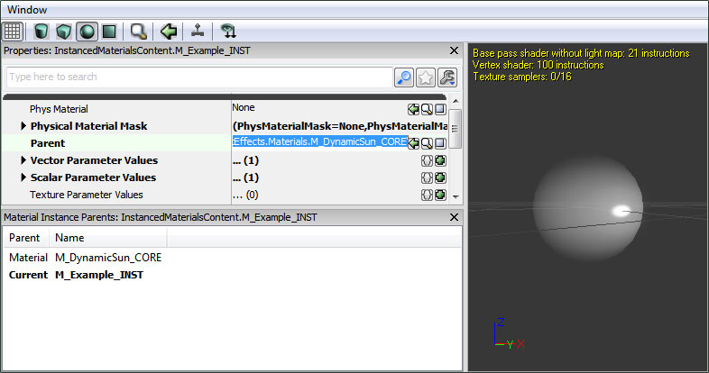
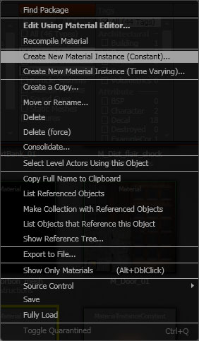
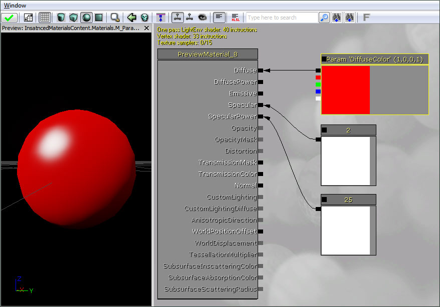

UDN
Search public documentation:
InstancedMaterialsCH
English Translation
日本語訳
한국어
Interested in the Unreal Engine?
Visit the Unreal Technology site.
Looking for jobs and company info?
Check out the Epic games site.
Questions about support via UDN?
Contact the UDN Staff
日本語訳
한국어
Interested in the Unreal Engine?
Visit the Unreal Technology site.
Looking for jobs and company info?
Check out the Epic games site.
Questions about support via UDN?
Contact the UDN Staff
实例化材质
概述
在编辑器中实例化材质
 然后为该材质赋值，将其实例化为这个新材质实例的 父类 属性。
然后为该材质赋值，将其实例化为这个新材质实例的 父类 属性。

在您希望实例的材质上右击，然后选择 创建新的材质实例（常量） （或者 创建新的材质实例（随时间变化） 根据您需要的实例类型进行选择）。
参数组

创建参数化的材质

标量参数
向量参数
贴图参数
- TextureSampleParameter2D 可以接受基本的 Texture2D
- TextureSampleParameterCube 可以接受 TextureCube 或立方体贴图。
- TextureSampleParameterFlipbook 可以接受 FlipbookTexture。
- TextureSampleParameterMeshSubUV 可以接受通过使用网格物体发射器制作 uv 细分效果的 Texture2D。
- TextureSampleParameterMeshSubUV 可以接受通过使用网格物体发射器制作 uv 细分混合效果的 Texture2D。
- TextureSampleParameterMovie 可以接受 MovieTexture（bink 视频格式）。
- TextureSampleParameterNormal 可以接受作为法线贴图使用的 Texture2D。
- TextureSampleParameterSubUV 可以接受通过使用平面实例发射器制作 uv 细分效果的 Texture2D。
静态参数
在脚本中实例化一个材质
var MeshComponent Mesh;
var MaterialInstanceConstant MatInst;
var float TanPercent;
function InitMaterialInstance()
{
MatInst = new(None) Class'MaterialInstanceConstant';
MatInst.SetParent(Mesh.GetMaterial(0));
Mesh.SetMaterial(0, MatInst);
UpdateMaterialInstance();
}
function UpdateMaterialInstance()
{
MatInst.SetScalarParameterValue('TanPercent',TanPercent);
}
function Timer()
{
if(/*character is outside*/)
TanPercent = Lerp(/*tanning rate*/,TanPercent,1.0);
UpdateMaterialInstance();
}